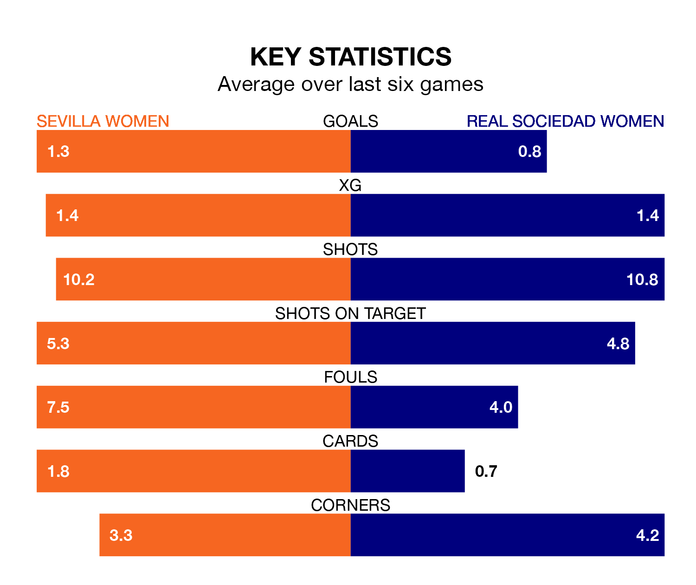

Real Sociedad Women travel to the Estadio Jesús Navas looking to secure a first win in six Liga F games against Sevilla Women on Saturday.
Sociedad Women have lost two and drawn three matches since they last earned three points – against Eibar Women on February 4.
They face a Sevilla side who have won just one and drawn one over that time.
With 40 goals in 21 games so far this season, Sevilla are scoring more than average in the league with 1.9 goals per game. But they are conceding more than average too, letting in 40 goals at a rate of 1.9 per game.
Sociedad Women, meanwhile, are below average scorers, with 1.3 goals per game, compared to a league average of 1.6. They have conceded 1.7 goals per game.
In Cristina Martín-Prieto Gutierrez, the hosts have one of the league's most on-form strikers so far this season. She has notched 13 goals in 21 appearances, to sit second in the scoring charts.
Her goal rate of one every 140 minutes is slightly quicker than that of Synne Jensen, the away team's top scorer with a goal every 123 minutes, and a total of 11 goals in 19 games.
In the last 10 years, Sevilla and Sociedad Women have played each other on 14 occasions. Sevilla won five of them, Sociedad Women six, and they drew three times.
On average, Sevilla scored 1.1 goals and Sociedad Women 1.4 in those matches.
Their last meeting was on November 18, when Sevilla won 2-1 away.
Sevilla are seventh in the table after 21 games, of which they have won 10 and drawn three, earning 33 points.
Sociedad Women are one place behind Sevilla in eighth, with seven wins and seven draws putting them on 28 points.
Sevilla's last match was on March 23, a 5-0 loss against UD Granadilla Tenerife.
Sociedad Women lost 1-0 against Athletic Club Women last time out, also on Saturday.
Updated: 12:16 (UTC), 25/03/24